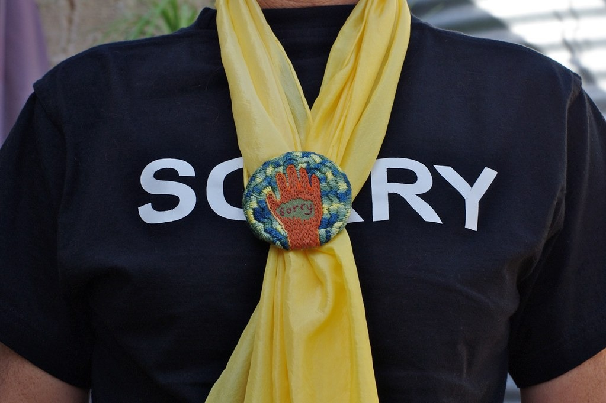

Original Blackboard item · _7400123_1
The Healing Foundation, created after Kevin Rudd’s apology, supports survivors of the Stolen Generations to heal from their trauma, and also their descendants; their children’s transgenerational trauma.
"In Australia, intergenerational trauma predominantly affects the children, grandchildren and future generations of the Stolen Generations. Stolen Generations survivors may also pass on the impacts of institutionalisation, finding it difficult to know how to nurture their children because they were denied the opportunity to be nurtured themselves.”
— (The Healing Foundation, 2021)

Aboriginal and Torres Strait Islander children are still being removed from their homes and placed in out-of-home care at incredibly high rates — nearly 10 times that of non-Indigenous children (Family Matters, 2021).
To value add to your learning on this issue: conduct an online literature search and review media references to the dramatic increase in the numbers of Indigenous children being removed from their families by the state and placed into out of home care.
Bring your research to this weeks tutorial as we will be exploring this further.